Выполним алгоритм расширения для построения структуры данных, эффективно работающей с порядковыми статистиками
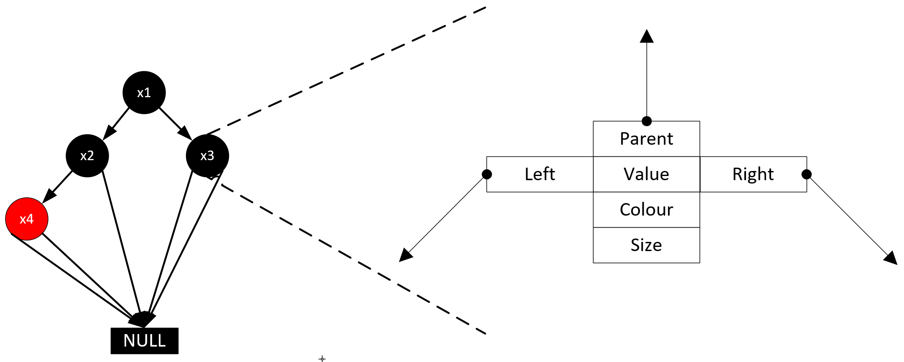
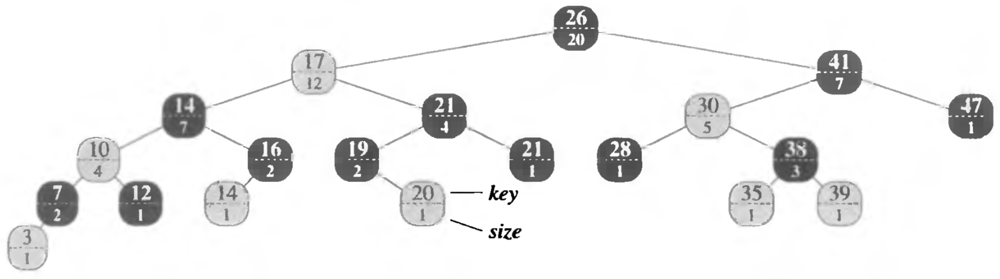
Вставка узла состоит из двух фаз:
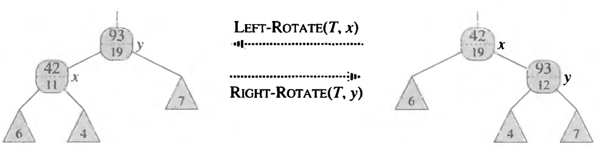
Для эффективного оперирования порядковыми статистками дерево порядковой статистики предоставляет две дополнительные операции:
Пусть есть ранг искомого элемента $i$ и корень поддерева, в котором производится поиск, $x$ (изначально $x$ – корень всего дерева), тогда:
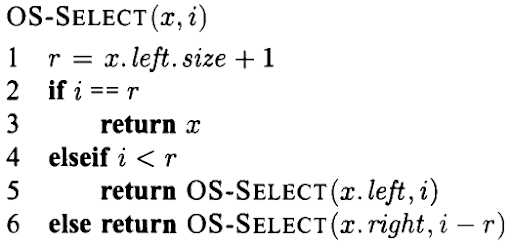
Алгоритм определения ранга элеменат строится исходя из следующих соображений:
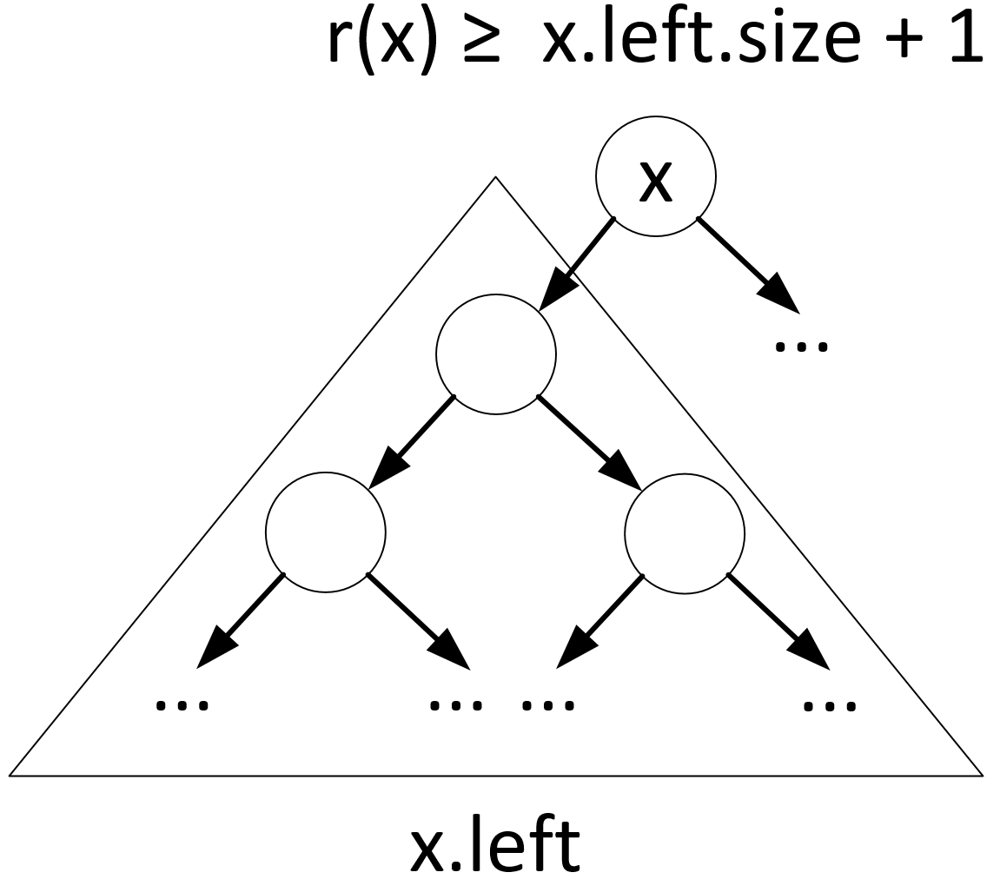
Треугольниками обозначены поддеревья, которые необходимо обойти до узла $x$
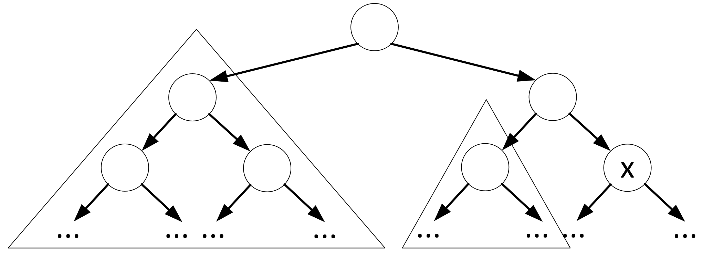
Пусть задан некоторый элемент $x$ дерева $T$. Тогда поиск его ранга будет производиться следующим образом:
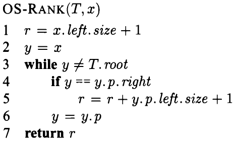
Если дано два отрезка, они могут находиться только в одном из трёх состояний:
Это называется трихотомией отрезков
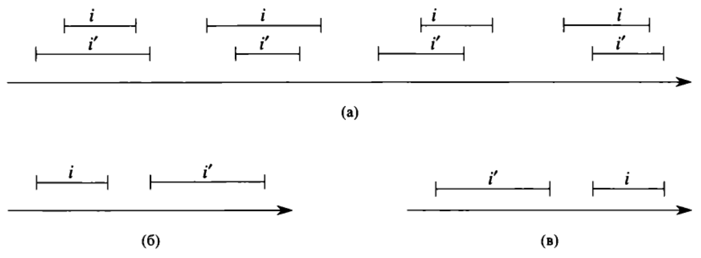
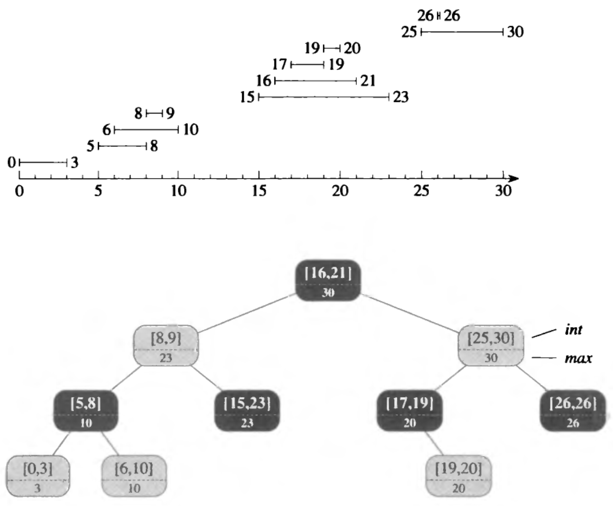
Дерево отрезков поддерживает следующие операции:
Единственной принципиально новой для красно-чёрного дерева операцией в дереве отрезков является поиск отрезка, перекрывающегося с данным
Чтобы понять, как построен алгоритм поиска, установим, что поиск начинается с корня, и рассмотрим три ситуации:
На последующих рисунках:
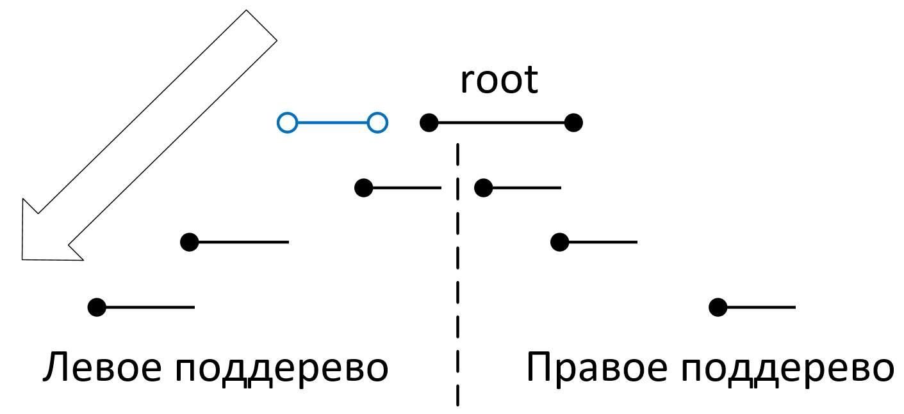
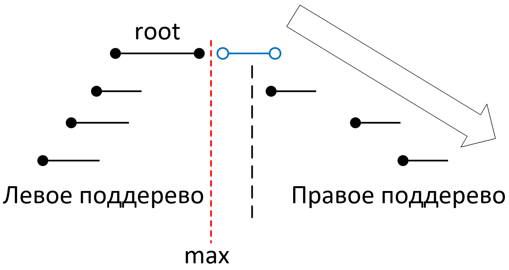
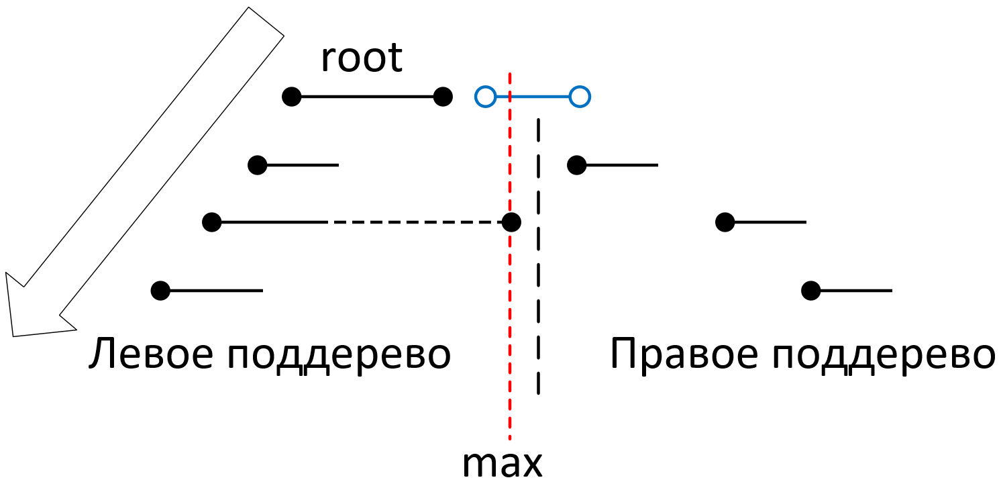
Примем следующие обозначения:
Принимая во внимание обозначения с предыдущего слайда, можно представить алгоритм поиска в виде псевдокода:
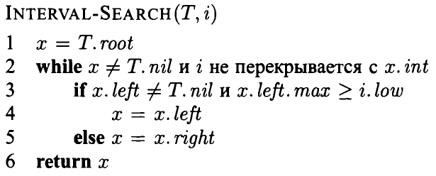
Т.к. присваивания на строках $4$ и $5$ псевдокода осуществляют спуск по дереву по простому нисходящему пути, очевидно, что сложность данного алгоритма составляет $O(log_2N)$